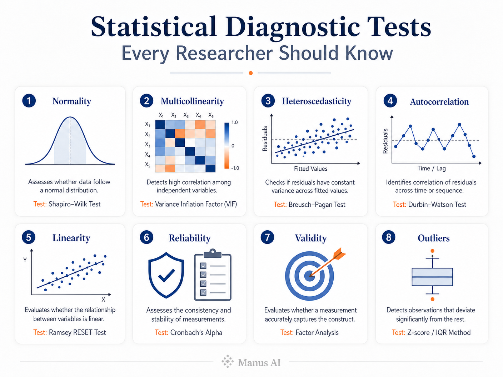

Statistical Diagnostic Tests Every Researcher Should Know
May 16 2025 • 5 min read

Image by Manus AI
Before you run a single regression or ANOVA, there is a step that separates rigorous analysis from shaky conclusions: diagnostic testing. Think of it as a pre-flight checklist for your data. Skip it, and you risk landing in entirely the wrong place.
Why Diagnostics Matter
Most statistical methods rest on assumptions — about how data are distributed, how variables relate to one another, and how errors behave. When those assumptions break down silently, the model keeps running and happily produces numbers that mean very little.
Good diagnostic practice helps you:
- Catch data quality problems before they compound
- Spot assumption violations early, while they are still fixable
- Produce estimates you can actually defend
- Make findings others can trust and build on
Skipping this step does not make the problems disappear. It just makes them invisible until a reviewer — or a replication attempt — finds them for you.
1. Normality Test
Many parametric methods (regression, ANOVA, t-tests) assume that either the outcome variable or the model residuals follow a roughly normal distribution. A normality test tells you whether that assumption is plausible given your sample.
Common approaches:
- Shapiro-Wilk Test — well-suited for smaller samples (n < 50), widely recommended in applied research
- Kolmogorov-Smirnov Test — more appropriate for larger datasets
A significant result (p < 0.05) suggests the data depart meaningfully from normality, which may push you toward non-parametric alternatives or data transformation.
2. Multicollinearity Test
When two or more independent variables move together too closely, regression coefficients become unstable and difficult to interpret. Multicollinearity does not bias your predictions, but it does make it nearly impossible to isolate the effect of any single predictor.
Common indicators:
- Variance Inflation Factor (VIF) — values above 5 or 10 are common thresholds for concern
- Tolerance (the inverse of VIF) — low tolerance signals high collinearity
Detecting this early lets you consider dropping redundant predictors, combining them, or applying regularisation methods such as ridge regression.
3. Heteroscedasticity Test
Ordinary least squares regression assumes that the spread of residuals stays roughly constant across all fitted values. When error variance fans out (or collapses) as predictions change, the standard errors are unreliable, and so are your significance tests.
Common tests:
- Breusch-Pagan Test — tests whether residual variance is related to predictor values
- White Test — a more general version that also captures non-linear forms of heteroscedasticity
Remedies include weighted least squares, robust standard errors, or transforming the outcome variable.
4. Autocorrelation Test
In time-series data or repeated-measures designs, residuals from one observation often predict residuals from the next. This violates the independence assumption and inflates the apparent precision of your model.
Common test:
- Durbin-Watson Test — produces a statistic between 0 and 4; values close to 2 suggest no autocorrelation, values below 1 or above 3 signal a problem
If autocorrelation is detected, time-series models (ARIMA, GLS) or adding lagged variables are typical next steps.
5. Linearity Test
Linear regression assumes the relationship between each predictor and the outcome is — as the name suggests — linear. A curved relationship that gets forced into a straight line produces biased coefficients across the whole range of the predictor.
Common approaches:
- Scatterplots of each predictor against the outcome, inspected visually
- Residual vs. fitted plots — random scatter around zero is the target pattern
- Component-plus-residual (partial residual) plots — useful for pinpointing which variable has a non-linear relationship
Polynomial terms or non-linear transformations can often fix the issue once it is identified.
6. Reliability Test
When data come from questionnaires or rating scales, you need to know whether respondents interpret the items consistently — and whether the instrument would produce similar scores under similar conditions.
Common indicator:
- Cronbach's Alpha — values above 0.70 are generally considered acceptable for research instruments, above 0.80 preferred for clinical or high-stakes applications
Low alpha can mean items are measuring different constructs, are poorly worded, or need to be revised or removed.
7. Validity Test
Reliability tells you an instrument is consistent; validity tells you it is measuring the right thing. A highly reliable bathroom scale placed on an uneven floor gives consistent readings that are consistently wrong.
Key types:
- Content validity — do the items adequately cover the domain of interest? Usually assessed by expert review
- Construct validity — does the instrument correlate with theoretically related measures and diverge from unrelated ones?
- Criterion validity — does the instrument predict or concur with an established gold standard?
8. Outlier Detection
Extreme observations can have an outsized effect on regression coefficients, means, and standard deviations. Identifying them does not automatically mean deleting them — sometimes outliers are the most interesting data points — but you should know they are there and understand their influence.
Common methods:
- Boxplots — a quick visual screen for univariate outliers
- Z-scores — observations beyond ±3 standard deviations are flagged in many disciplines
- Mahalanobis Distance — detects multivariate outliers by measuring how far a case sits from the centroid of all predictors simultaneously
Quick Reference
| Diagnostic Goal | Common Test or Indicator |
|---|---|
| Normality | Shapiro-Wilk, Kolmogorov-Smirnov |
| Multicollinearity | Variance Inflation Factor (VIF) |
| Heteroscedasticity | Breusch-Pagan, White Test |
| Autocorrelation | Durbin-Watson |
| Linearity | Residual plots, scatterplots |
| Reliability | Cronbach's Alpha |
| Validity | Content, construct, criterion review |
| Outliers | Boxplots, Z-scores, Mahalanobis Distance |
The Takeaway
Statistical analysis is only as trustworthy as the assumptions it rests on. Running diagnostics is not an extra burden — it is the work that makes everything downstream credible. The tests above take a fraction of the time that went into collecting your data, and they are the difference between findings you can defend and findings that collapse under scrutiny.
Questions or comments on any of these tests? Drop them below.